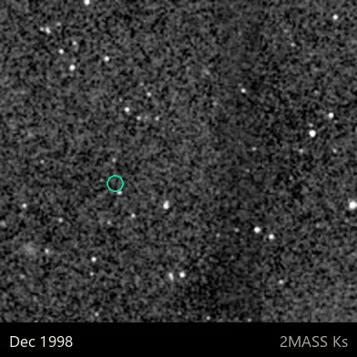

Brown dwarf · Y
WISE 0855
The coldest known brown dwarf, 7.4 light-years away, moving 8.2 arcseconds per year.

The coldest brown dwarf known, only 7 light-years away and too cold to shine in visible light. The images step through the wavelengths: at first the circle holds only the glow of a neighbouring star. Beyond 4 microns a new dot appears that is not in the Gaia star catalogue. In the colour picture it is the red one.
What to look for
The images step through the wavelengths. Below 4 microns the circle holds only the edge of an ordinary star just to its west. In the two longest-wavelength detectors a second source appears that is not in the Gaia catalogue: that is WISE 0855. In the colour picture it is the red dot. Switch to Visits in D6 to see it move.
SPHEREx has 258 exposures of this spot, from May 5, 2025 to May 14, 2026.
Open WISE 0855 in Chronosphere
Over a quarter of a century

Sources: SPHEREx, NASA/JPL-Caltech, IRSA · SIMBAD · Gaia DR3 · 2MASS · WISE, NEOWISE · Wikipedia